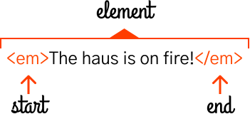

HTML stands for Hypertext Markup Language. Technically HTML is not a programming language. It's called a markup language, because it's a way to mark up regular text to specify structure. This is similar to how you would physically mark up an important passage in a book by underlining it. When you write on the raw text in a book, you are adding semantic meaning to those words. For example, when studying you might highlight or underline a word or phrase to draw attention to that passage or show its importance.

The same is true for markup in HTML. You use HTML on the web to define the structure or 'mark up' the elements of a web page so that they have meaning beyond the text that is displayed. These meanings follow rules and allow you to define your page in different elements. Elements are the building blocks of a website.
An element is a stand alone or discrete entity in HTML, which is usually denoted by two tags, a start or beginning tag and an ending tag. These tags follow a certain syntax and they encase content to form an element. Here's an element with denoted parts:
 with start tag and end tag" height="160" width="351">In HTML, the <em> tag is short for emphasis, and by convention, browsers usually render it in italics. The tag above would appear like this on a web page:
The haus is on fire!
Here's the raw HTML in an editable and easy to copy and paste format:Another way to refer to the start of the element is as an opening tag, <em>, and a closing tag, </em>. Notice that the closing tag has a slash in it? This is standard HTML syntax, and you'll see that for all elements with a starting or opening (<tagname>) tag, and an ending or closing (</tagname>) tag, they will follow this pattern. In our haus metaphor, you can think of this kind of element as being the first brick or building material.
The emphasis <em> tag helps us describe text content. Remember that websites started as pages or documents, so text today is just as much a fundamental part of HTML and websites as it was in the early web. You can denote text in two ways:
I lied before because the <p> tag is really the first brick or building block in your world of new materials. See how the <p> tag is here creating a new visual block here, which is separate and apart from the surrounding content? That's the purpose of this block level type of element.
Here's the raw HTML in an editable and easy to copy and paste format:
Adding meaning to text in the same line means adding semantic meaning through tags like emphasis <em> or importance <strong>. These are less like bricks and more like your paint, your lights, the parts of your haus that draw attention to certain elements and add special extra meaning to your basic text. Of course, to really use your paint and hang your lights, you're going to need more structure. You're going to need a wooden frame to hang the rest of your content on.
Headings serve as your framework, your wood, the sturdy dividers that the rest of your HTML haus can be built inside of and around. Every page in HTML should have at least one heading, called an H1 (<h1>) that provides the title for that page. After the H1, the rest of the headings flow down in a hierarchy, denoting the relative relationship between subordinate or nested content. Headings allow you to see the same structure you'd experience in a table of contents. Browsers will render headings by default as larger text, heavier (bolder) in appearance, and in a range starting from the largest, H1, and reducing down to the smallest, H6. Here's what all the headings from 1-6 look like on this website:
This page is in progress, anything below this line is dangerous! Come back later when it's finished.
Semantic HTML is the use of HTML markup to reinforce the semantics, or meaning, of the information in webpages and web applications rather than merely to define its presentation or look. Semantic HTML is processed by traditional web browsers as well as by many other user agents. CSS is used to suggest its presentation to human users.